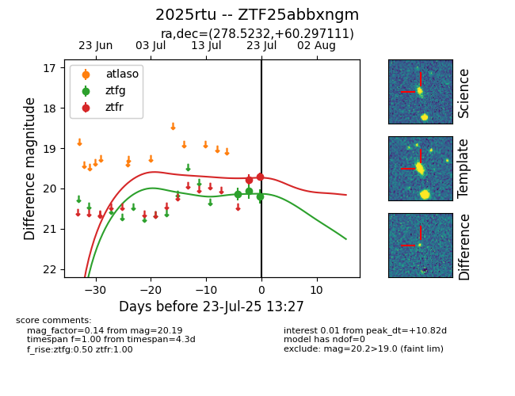

Target ZTF25abbxngm at 2025-07-23 13:27, see:
FINK: fink-portal.org/ZTF25abbxngm
Lasair: lasair-ztf.lsst.ac.uk/objects/ZTF25abbxngm
ALeRCE: alerce.online/object/ZTF25abbxngm
TNS: wis-tns.org/object/2025rtu
YSE: ziggy.ucolick.org/yse/transient_detail/2025rtu
alt names
ZTF25abbxngm (ztf,fink)
2025rtu (tns,yse)
coordinates:
equatorial (ra, dec) = (278.5232,+60.29711)
galactic (l, b) = (89.7641,+25.43039)
photometry
last ztfg=20.19, ztfr=19.71
3 ztfg, 2 ztfr detections
